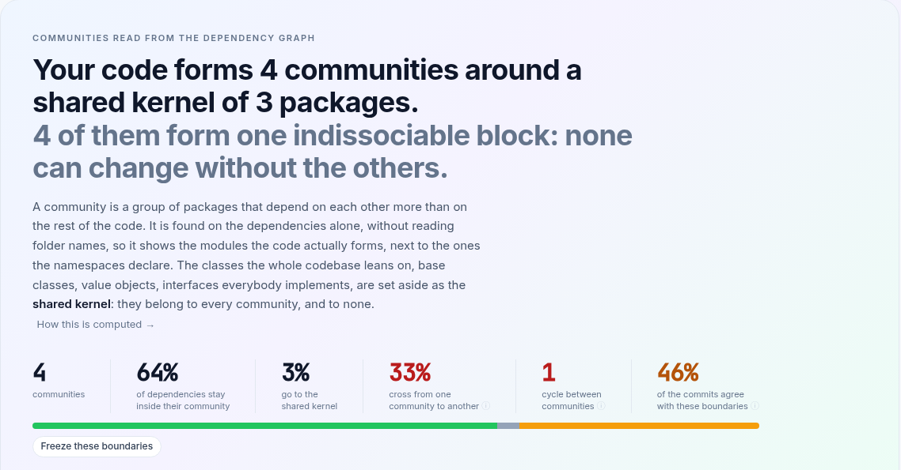
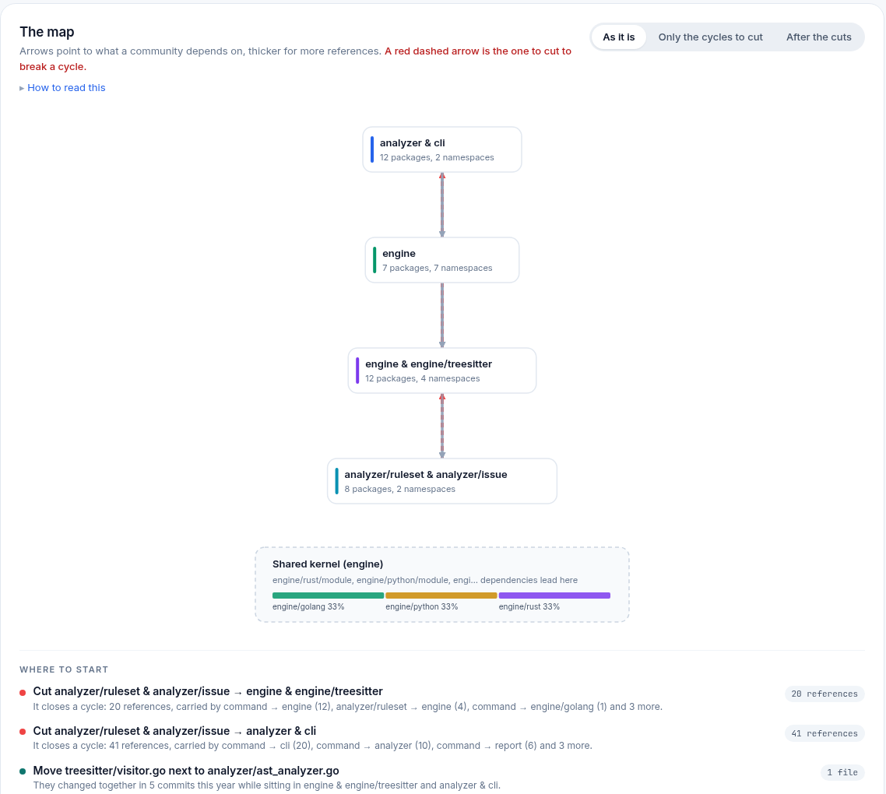
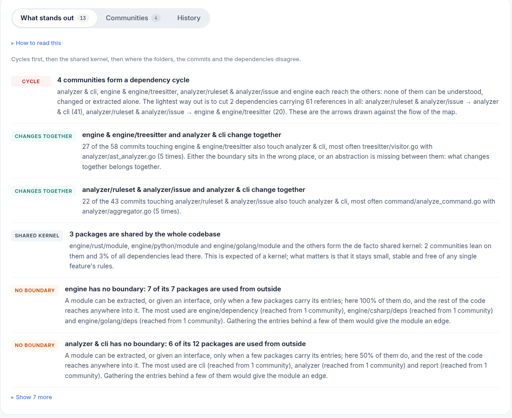
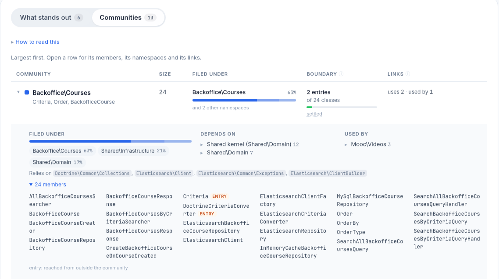
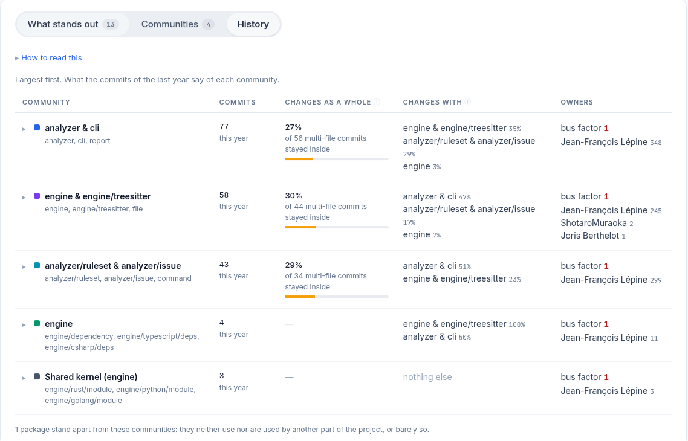

Community Detection
A community is a group of classes (or packages) that depend on each other more than on the rest of the code. AST Metrics finds them on the dependency graph alone, without reading folder names, so the page shows the modules the code actually forms next to the ones the namespaces declare. It is the Natural groups page of the HTML report, under Architecture.
What a community is
Units. In PHP, Java, C#, TypeScript and Python that imports names, a unit
is a class (or interface); a file holding only top-level code counts as a unit
of its own. In Go, Rust and any language whose imports name modules rather
than classes, a unit is a package: the granularity is decided per language on
what its dependencies name. Only the project's own code takes part: foreign
packages are not units (the row panel lists them under "Relies on"), test
files are left out, and so is anything under a test support directory
(test, tests, __tests__, spec, fixtures, testdata, stubs,
mocks, and so on). An edge from A to B is weighted by the number of distinct
places in A where B is used.
The shared kernel. Some units are used by everyone: a base class, a value object, an interface everybody implements. Left in the graph, they would land in one community by chance and tie it to all the others. A unit is set aside in the kernel when at least 3 units from at least 3 namespaces use it, it receives at least 3 references, and at most 15% of the pairs of its users know each other (that last condition tells a kernel from the heart of a feature: an entity used by its repository, its controller and its form is used from several namespaces too, but those three know each other). The kernel is only looked for when the project has at least 4 namespaces. It belongs to every community and to none, takes no part in the cycles, and a reference to it never counts as a crossing.
How the communities are found. The kernel is taken out first, then a
weighted Louvain detection
runs on the remaining graph at resolution 1. The implementation is
deterministic: nodes are visited in the order of their ids and ties are broken
the same way every time, so two runs on the same code draw the same map.
Communities of fewer than 3 units are folded into the neighbour they exchange
the most with (two classes are a pair, not a module); a small group linked to
nothing stays apart and is counted with the units that take no part.
Communities are numbered largest first. One is named after its namespace
when that namespace holds at least half of its members; otherwise after the
word its class names share (Billing, Repository), joined to the dominant
namespace when that word names a layer (Repository · Component\Scm), and
failing that after the class at its heart. A community drawn at least 75%
from one namespace is called cohesive.
Reading the page

The verdict is one sentence: how many communities the code forms, around a shared kernel of how many units, followed by the one thing that qualifies it, in this order of priority: cycles (one cycle holding at least 4 communities and at least 34% of them is called "one indissociable block"), a kernel that is the centre of gravity (at least 25% of the dependencies lead to it, or it holds at least 10% of the units), then whether the communities stay inside their namespaces or cut across them.
The KPIs split every dependency between placed units into three shares that add up to 100%: the ones staying inside a community, the ones going to the kernel, the ones crossing from one community to another. The cross share turns amber above 15% and red above 30%; it is also amber when a cycle holds 4 communities or more, because a low figure means little when the communities cannot be told apart. Cycles counts the groups of communities that reach each other. History agrees is the share of the commits of the last year touching several files whose files all sit in one community, the kernel allowed: green from 70%, amber from 40%.

The map. Arrows point to what a community depends on, thicker for more references. What nobody depends on sits at the top, what everything rests on at the bottom. A red dashed arrow climbing back up closes a cycle, and it is one of the lightest to cut: they are chosen by a greedy heuristic that orders the communities of each cycle and marks the arrows going against that order. The dashed grey box is the shared kernel; the boxes under a line are linked to no other community. When there are cycles, three views are offered: As it is, Only the cycles to cut, and After the cuts, which hides the red arrows and says how many layers are left without them. The panel on the right zooms on a folder: every folder holding at least 6 units (300 folders at most) is analysed on its own, as if it were the whole project.
Where to start lists at most three actions derived from the findings, the most valuable first: cut a back edge (the two lightest at most, with the references that carry it), move a file next to the one it keeps changing with, gather the entries of the most exposed community behind its three most used members, invert the references the kernel makes into the community it uses the most.
What stands out

The first tab lists the findings, most important first: cycles, then what the history says, then the kernel, then where the folders and the dependencies disagree. At most 5 findings of each kind, 3 for the history ones. The pill says which kind:
- cycle: communities that reach each other. For a pair, the lighter direction is the one to cut; for a longer cycle, the detail names the back edges and their total weight.
- changes together: two communities the same commits keep touching, at least 5 shared commits making at least 30% of the commits of the less active one, with the pair of files most often changed together. What changes together belongs together: either the boundary sits in the wrong place, or an abstraction is missing.
- never as a whole: a community of at least 5 units, touched by at least 20 commits, where fewer than 10% of the multi-file commits stayed inside it. The dependencies group these units, the work does not.
- shared kernel: the units set aside, how many communities lean on them and what share of the dependencies lead there. Expected of a kernel; the finding changes tone when the kernel is the centre of gravity.
- kernel leak: the kernel depends on the code that uses it. A kernel that knows its users cannot change without them: those references should be inverted or moved out.
- no boundary: a community of at least 5 units where at least half of the members are used from outside. Nothing acts as its entry, so it cannot be extracted or given an interface as it is.
- split folder: a namespace of at least 6 units whose members fall in at least 3 communities, none holding half of them. The folder gathers several concerns rather than one module.
- spread: a community of at least 5 units drawn from several namespaces, none holding 75% of it. One module filed in several places, or one namespace leaking into the others.
- layers: when half or more of the communities are not cohesive, the spread findings are replaced by one observation about the whole project. When the namespaces are named after technical layers (Controller, Entity, Repository...), the communities are the features running through them; the finding says so and notes that a layout by feature would file each community together.
- bridge: a unit, outside the kernel, that exchanges references with at least 2 other communities. It is a de facto contract between them and its interface deserves to be explicit.
The communities table

The Communities tab lists them largest first, the kernel last. Filed under shows the namespace holding most of the members with its share, and how many other namespaces contribute. Boundary counts the entries: the members referenced from another community or from the kernel, the surface the community offers to the rest of the code. The bar is green up to 25% of the members, amber up to 50%, red beyond. Under it, settled means at least 90% of the members stay put when the detection is tuned differently; otherwise the cell says how many are mobile. To tell them, the detection is run four more times, at resolutions 0.7, 0.85, 1.2 and 1.4; a member that sided with another community in at least one run sits on the border. The kernel has no boundary: it is exposed by definition.
Open a row for its detail: every namespace it draws from, what it depends on and what it is used by with the five heaviest class-to-class references behind each link, the foreign packages it relies on, and its members. An entry tag marks the members reached from outside; a dotted name is a mobile member.

When the files carry git history, the History tab reads the same table from the commits of the last year. Commits is the number of distinct commits touching at least one file of the community. Changes as a whole is the share of the multi-file commits touching the community that stayed inside it, the kernel allowed; it is left blank under 5 such commits. Changes with lists the other communities the same commits touch, with the share of this community's commits they take. Owners gives the bus factor, the number of people who together made half of the commits, and the three heaviest committers. Commits touching more than 30 analysed files are ignored as bulk changes.
Freezing the boundaries
Three project rules read the analysis in ast-metrics lint and ast-metrics
ci. All three pass when the project has fewer than two communities.
requirements:
rules:
architecture:
no_community_cycles: true
max_community_cross_share: 20
no_cross_community_dependencies: true
no_community_cyclesfails once for each cycle, naming its communities and up to three arrows to cut, lightest first:Communities depend on each other: A, B; to cut: B → A (2).max_community_cross_sharetakes a percentage and fails when the cross share of the KPIs goes over it:Too many dependencies cross between communities: 33% (max: 20%).no_cross_community_dependenciesfails once for every reference from a unit of one community to a unit of another, the kernel left aside. On its own it is unusable on an existing project; it is meant to be frozen:
ast-metrics baseline
ast-metrics baseline writes today's crossings into
.ast-metrics-baseline.yaml; from then on ast-metrics lint ignores them and
fails only on a crossing added since. Each violation is filed under the file
declaring the unit that depends, with the message
Foo depends on Bar, which sits in another community. The message carries no
community name, id or weight on purpose: a community is renamed as soon as its
hub moves, and the baseline recognizes an entry by rule, file and message, so
only stable text may reach it. The two class names are what identifies a
crossing.
The report shows the state of that rule under the KPIs: Freeze these boundaries with the snippet above when the rule is off, Boundaries watched, not frozen yet with the number of crossings failing the lint when it is on without a baseline, and Boundaries frozen with the number of crossings in the baseline and how many are new since.
See Rulesets & Linting for the rest of the configuration.
Getting the data
The JSON report (--report-json) carries the whole analysis under the
communities key: verdict, granularity (class or namespace),
communitiesCount, largestSize, unitsGrouped, unitsIsolated,
internalShare, sharedShare, crossShare, modularity, confidence,
largestCycle, cohesiveCount, historyAvailable, historyCommits,
historyAgreement, then communities, edges, cycles, findings and
actions. Each community lists its id, name, shortName, shared,
size, cohesive, namespaces, hubs, members, uses and usedBy with
their references and details, externals, internalReferences,
outboundReferences, inboundReferences, exposedCount, exposedShare,
exposed, foreignUsesCount, border, confidence, busFactor,
topCommitters, historyCommits, historyCohesion and changesWith. Each
edge carries from, to, references, inCycle, back and shared. Ids
are "0", "1", ... largest first, and "shared" for the kernel.
The MCP server exposes the same payload through
get_communities. By default it lists the hubs of each community only;
with_members: true adds every member, the entries and the border, and
force_refresh: true ignores the cache.
Limits
- One year of history. The git analysis reads the commits of the last year only. A community that was written and then left alone shows as untouched, and "changes together" can only be judged on active code.
- Packages are coarser than classes. In Go and Rust the units are packages, so a project of a dozen packages forms a handful of communities and the findings speak of packages. The class-level reading needs a language whose imports name classes.
- A community is a reading, not a truth. Louvain optimises modularity, and another resolution draws slightly different borders: that is what the mobile members and the confidence make visible. The thresholds above (3 units, 75% cohesion, 50% exposed, 5 shared commits...) are choices; read the figures behind each finding before acting on it, and prefer the settled communities and the heaviest links when deciding where a boundary should go.